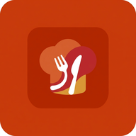

Sapori conserva le ricette solo su questo dispositivo: sono private e disponibili anche offline.
Se cancelli i dati dei siti web, però, il ricettario viene eliminato.
Salva periodicamente un Backup JSON dalle Impostazioni.